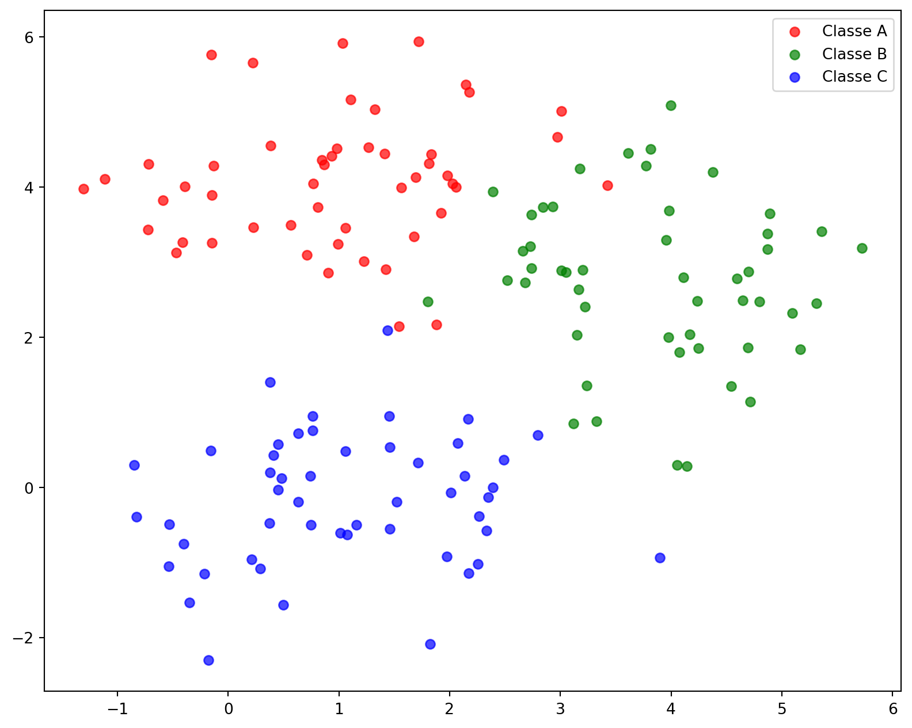
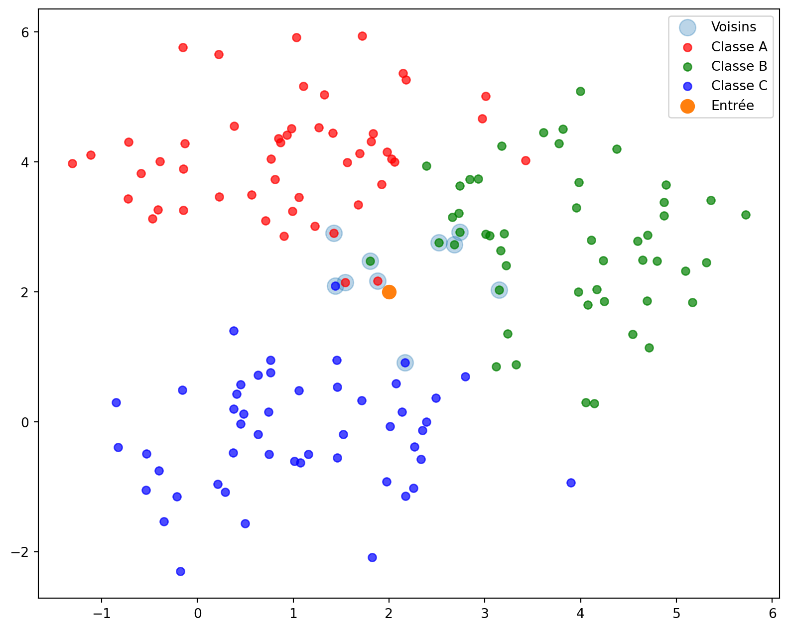
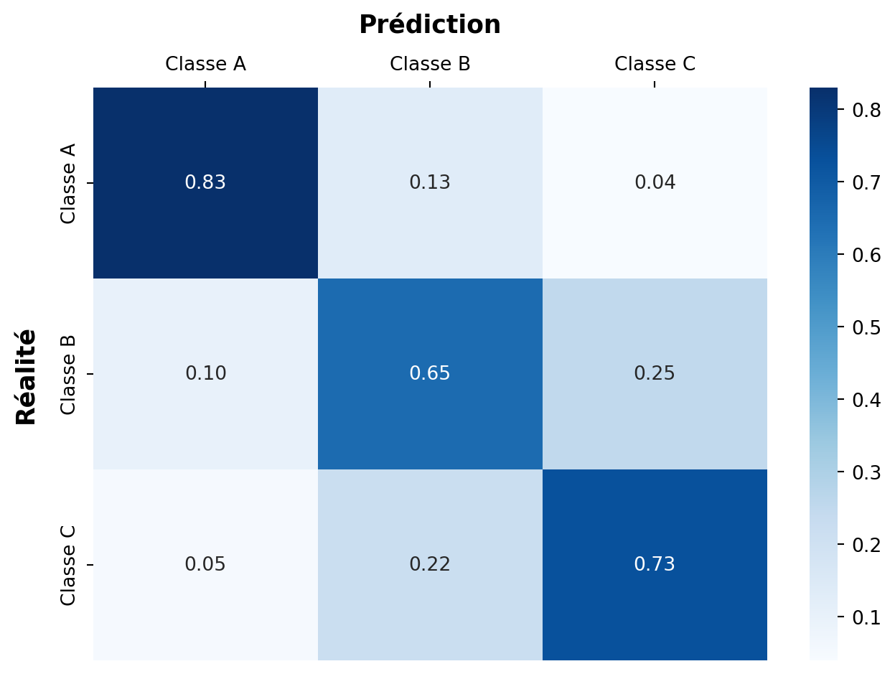

Algorithme des k-voisins
Description de l’algorithme
On dispose d’un jeu d’apprentissage consistant en un certain nombre de données réparties dans différentes classes. On peut représenter ce jeu d’apprentissage par une série de couples \((x_i,c_i)\) où \(x_i\) représente une donnée et \(c_i\) la classe à laquelle elle appartient.
On se donne maintenant une donnée arbitraire \(x\) et on souhaite déterminer à quelle classe elle appartient de manière le plus probable. Pour cela, on choisit dans le jeu d’apprentissage les \(k\) données “les plus proches” de \(x\), disons \(x_{i_1},\dots,x_{i_k}\). Ces entrées sont associées à des sorties \(c_{i_1},\dots,c_{i_k}\). On choisit ensuite comme classe associée à \(x\) la classe la plus représentée parmi \(c_{i_1},\dots,c_{i_k}\).
NoteApprentissage supervisé
L’algorithme des \(k\)-voisins est un algorithme d’apprentissage supervisé. En effet, un opérateur a dû au préalable affecté “manuellement” une sortie à chaque entrée du jeu d’apprentissage.
Modélisation du problème
On représentera chaque entrée du jeu d’apprentissage par un vecteur de \(\dR^p\) et la distance utilisée pour déterminer les plus proches voisins sera la distance euclidienne.1
Exemple
Donnons-nous par exemple des données représentées par des éléments de \(\dR^2\). Ces données sont réparties en trois classes comme le montre le graphique suivant.
On se donne maintenant une entrée et on recherche les \(k\) voisins les plus proches de cette entrée. On a choisi arbitrairement \(k\) égal à `{python} k.

Voici la liste des nombres de voisins dans chaque classe.
Nombre de voisins de classe A : 3
Nombre de voisins de classe B : 5
Nombre de voisins de classe C : 2On détermine alors la ou les classes les plus représentées.
['B']Si deux classes sont représentées le même nombre de fois, on peut éventuellement tenter de changer la valeur de \(k\) pour obtenir une unique classe.
Implémentation en Python
import numpy.linalg as alg
def voisins(entree, donnees, k):
"""
Renvoie les k plus proches voisins de entree dans donnees
entree : tuple de float
donnees : liste de couples formés d'un tuple de float et d'une classe
"""
return sorted(donnees, key=lambda d: alg.norm(d[0]-entree))[:k]def vote(classes):
# Renvoie la liste des éléments les plus représentés dans la liste classes
d = {c: classes.count(c) for c in classes}
return [c for c in d if d[c] == max(d.values())]vote(["Alphonse", "Bob", "Charlotte", "Bob", "Charlotte", "Charlotte"])['Charlotte']vote(["Alphonse", "Bob", "Charlotte", "Bob", "Charlotte", "Alphonse"])['Alphonse', 'Bob', 'Charlotte']def classification(entree, donnees, k):
v = voisins(entree, donnees, k)
return vote([x[1] for x in v])import numpy.random as rd
d1 = [(x, 'A') for x in rd.normal([1., 4.], 1., (50, 2))]
d2 = [(x, 'B') for x in rd.normal([4., 3.], 1., (50, 2))]
d3 = [(x, 'C') for x in rd.normal([1., 0.], 1., (50, 2))]
entree = [2, 2]
classification(entree, d1+d2+d3, 10)['C']Matrice de confusion
Pour mesurer la performance d’un algorithme de classification comme l’est l’algorithme des \(k\)-voisins, on peut utiliser une matrice de confusion. On suppose disposer de données dont on sait à quelles classes elles appartiennent. Chaque ligne de la matrice correspond à une classe effective et chaque colonne à une classe prédite par l’algorithme.
Dans l’exemple suivant, les données sont réparties entre 3 classes \(A\), \(B\) et \(C\). On voit par exemple que :
- 83% des éléments de la classe \(A\) ont été correctement prédits comme faisant partie de la classe \(A\) ;
- 25% des éléments de la classe \(B\) ont été incorrectement prédits comme faisant partie de la classe \(C\) ;
- 5% des éléments de la classe \(C\) ont été incorrectement prédits comme faisant partie de la classe \(A\).

Notes de bas de page
On peut tout à fait décider de représenter les entrées d’une autre manière et utiliser une distance autre que la distance euclidienne.↩︎